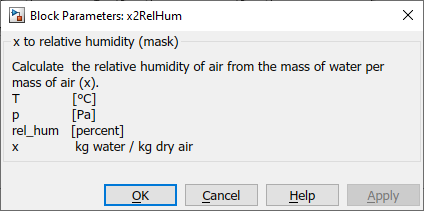

x2RelHum
Path: CARNOT/Basic/Material_Properties
Purpose:
The block converts the absolute humidity, i.e. the load of water in moist air,
to the relative humidity.
Description:
The function converts the relative humidity to the absolute humidity, i.e the
load of water in moist air according to the inputs. The material properties
functions can also be called directly from the command window by typing
x2rel_hum(temperature, pressure, rel_hum)
in the Matlab Command Window. Instead of the italic variables the actual value
of the respective property has to be entered.
For more information about the function type:
help x2rel_hum
Input:
| T | : | temperature (scalar or vector) in °C |
| p | : | pressure in Pa |
| x | : | absolute humidity in kgwater/kgair |
Output:
| rel_hum | : | relative humidity in percent (0..100) |
Parameters and Dialog Box:

Examples:
Open the example explorer from the Matlab command window
ExampleBrowser
or load the examples via the CARNOT library.
NOTE:
This block is only to be used in the case of air (fluid type 2,
see FluidEnum).
Characteristics:
| Direct Feedthrough | : | Yes |
| Sample Time | : | Inherited from driving block |
| Vectorized | : | No |